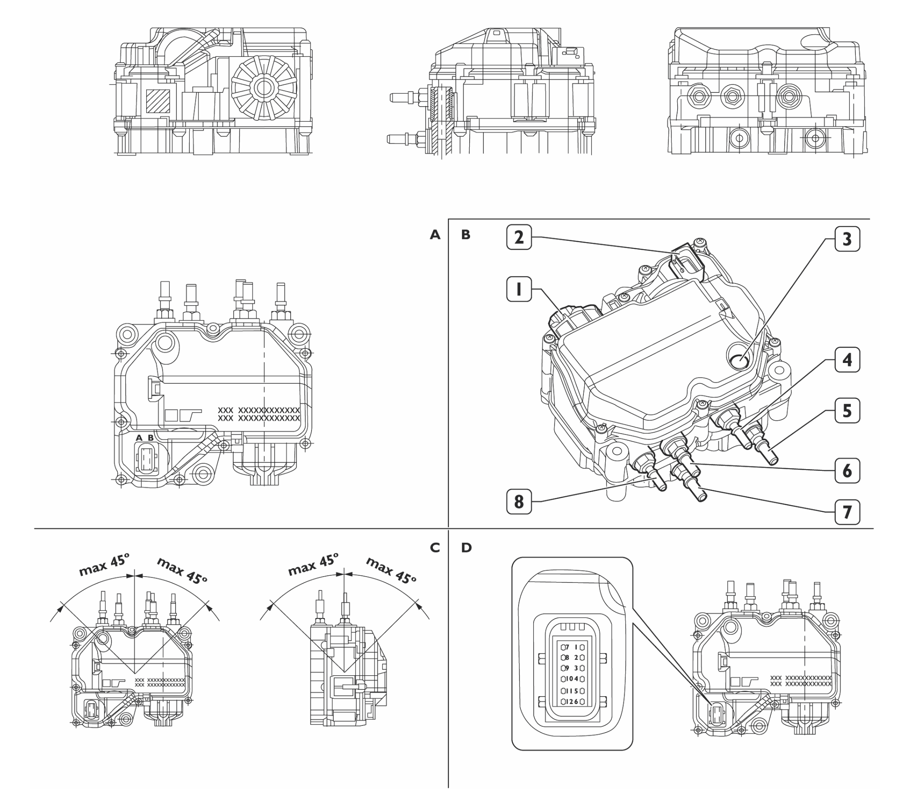
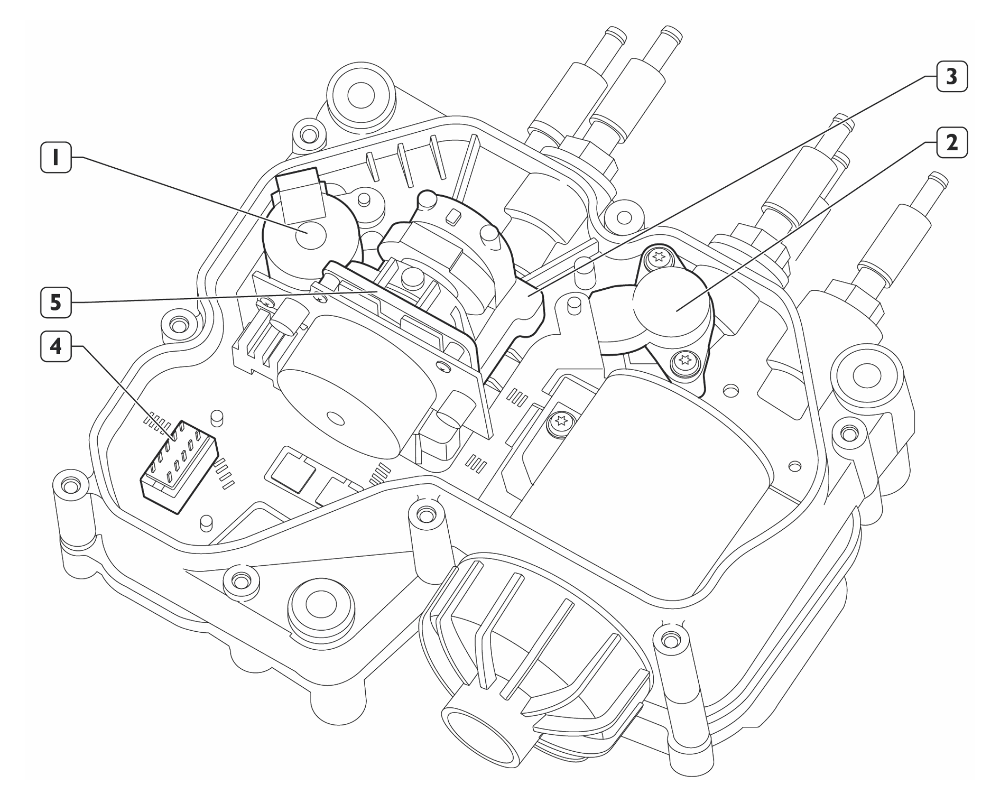

Technical Data for DEF Supply Module (Bosch 2.2)
 |
A | Technical View |
B | Perspective View |
C | Recommended Assembly Position |
D | Connector |
1 | Main Filter |
2 | Electrical Connector |
3 | Pressure Compensation Membrane |
4 | Supply Pipe from Tank |
5 | Fluid Input Pipe of Supply Module Heating |
6 | DEF Return Pipe to Tank |
7 | Fluid Output Pipe of Supply Module Heating |
8 | Delivery Pipe to Dosing Module |
 |
Electrical Components Inside the Pump Module | |
|---|---|
1 | Reverting Valve |
2 | Pressure Sensor |
3 | Temperature Sensor |
4 | Electrical Connector |
5 | Diaphragm Pump |
DEF Supply Module Technical Data and Specifications | |||
|---|---|---|---|
Module | Bosch 2.2 Supply Module (7200 g/h) | Bosch 2.2 Supply Module (12000 g/h) | Bosch 6HD Supply Module (15000 g/h) |
Operating Voltage (24 V) | 28.5 V | 28.5 V | 28.5 V |
Pump Motor Current | 200–600 mA | 200–600 mA | 4 A |
Pressure Sensor Supply Voltage | 4.75–5.25 V | 4.75–5.25 V | 4.75–5.25 V |
Pressure Sensor Signal Voltage | 3.30–3.40 V | 3.30–3.40 V | 3.30–3.40 V |
Reverting Valve Resistor | 18.1–24.1 Ω | 18.1–24.1 Ω | 19.16–22.04 Ω |
Operating Pressure | 9 bar (130 psi) | 9 bar (130 psi) | 9 bar (130 psi) |
Max flow | 8700 g/h at 9 bar | 12000 g/h at 9 bar | 15000 g/h at 9 bar |
Operating Temperature | −5–70°C (23–158°F) | −5–70°C (23–158°F) | −5–70°C (23–158°F) |
Temperature Limit | 85°C (185°F) | 85°C (185°F) | 85°C (185°F) |